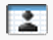
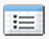

Using the calendar
On this page:
Using the calendar from the homepage
In the Calendar section of the SalesForce homepage you can:
- Click New Event to create a new event.
- Click the Scheduled Meetings subtab to view a list of the events you have scheduled for the next seven days.
- Click the Requested Meetings subtab to view meetings you have requested but not confirmed.
- View a small calendar of the current month. To change which month appears, click the left and right arrows.
- Navigate to different views of your calendar and click the icons underneath the small monthly calendar as appropriate.
The various calender views which are available from the mini-calendar on the homepage are:
-  Your personal calendar for today
- Your team's calendar for today
-  Your tasks (defaults to show only today's tasks, but can also show you all your other tasks)
 Your Today view
Your Today view- Your Week view
- Your Month view
These icons will appear in many sections of the SalesForce calendar screens and refer to the same thing. For example, if you are viewing your personal calendar for this week you can click on the icon to see the whole team's calendar for the week.
Sharing your calendar
To make your calendar visible to others in your organisation you need to grant access to other users.
- At the top of any Salesforce page, click the down arrow next to your name. From the menu under your name, select Setup or My Settings—whichever one appears.
- From the left pane, select one of the following:
- If you clicked Setup, click My Personal Information | Calendar Sharing.
- If you clicked My Settings, click Calendars & Reminders | Calendar Sharing.
- Click Add to share your calendar with others.
- Use the arrows to add or remove users, roles, or groups to your calendar.
- Use the Calendar Access drop-down list to specify how you want to share your calendar. Select one of the options. Unless you want to specifically restrict access to your calendar you probably want to select Full Access.